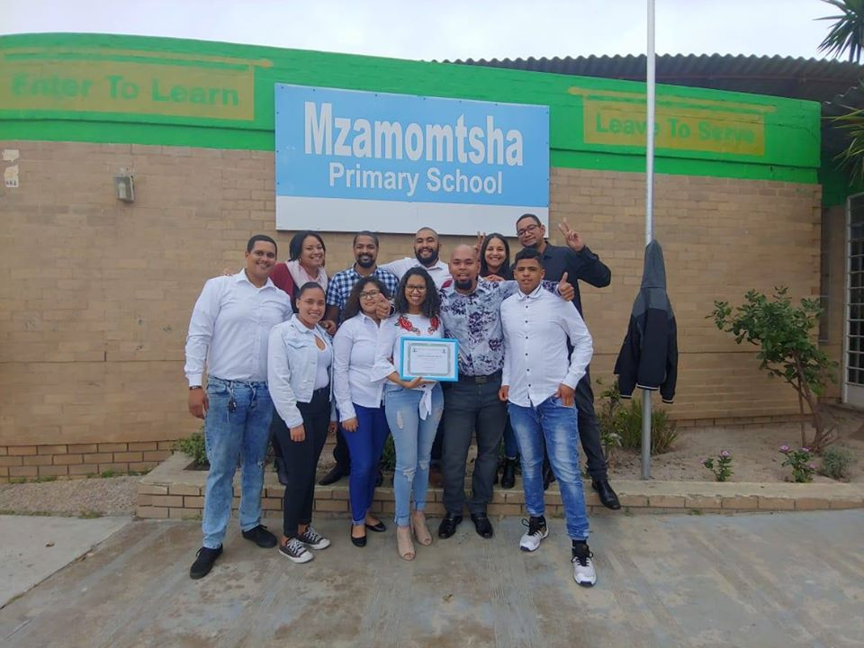

Copyright © 2020 DEV TEAM FOUR Pty(Ltd). - Design: Capaciti Interns
Mzamomtsha Primary School is located between Khayelistha Township and Umfuleni Township in the Western Cape Province of the Republic of South Africa. The schools headmaster, Mr. Simphiwe Khuze, joined in 2007. The school is located in a semi-township called Drift Sands which started off as an informal settlement. Drift Sands has since been developed and with support from the South African government it turned into a sprawling township with state of the art housing units. Mzamomtsha Primary School is plays a key role in Drift Sands and is supporting the local community.
The school was initially created for primary school students from grade 1 to grade 7, but due to the rapid population growth (births and migration) the school is also enrolling higher grades. Students are allowed up to grade 12 - which is the metric year. The rapid growth has lead to a series of problems for the Mzamomtsha Primary School. There are not enough classrooms to begin with and Mzamomtsha Primary School has no online presence. Besides, they can not find sufficient staff members to match the continuous growth. The school has 700 learners and a staff of 20 teachers.
Copyright © 2020 DEV TEAM FOUR Pty(Ltd). - Design: Capaciti Interns